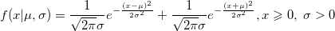

Foldnormpdf
Foldnormpdf-func
Definition
foldnormpdf (X,mu,sigma) returns the probability density function at each of the values in X using the folded normal distribution with mean mu and standard deviation sigma.
- 
Parameters
- x (input, double)
-
- mu (input, double)
- mean of the associated folded normal distribution .
- sigma(input, double)
- standard deviation of the associated folded normal distribution.
See Also
normpdf